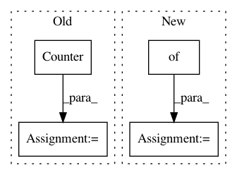

20df2162fbb6aff03feda464aca7c088834e2264,skbio/sequence/tests/test_sequence.py,TestSequence,test_kmer_frequencies,#TestSequence#,2001
Before Change
self.assertEqual(seq.kmer_frequencies(3, overlap=False), expected)
expected = Counter(["GATTACA"])
self.assertEqual(seq.kmer_frequencies(7, overlap=False), expected)
expected = Counter([])
self.assertEqual(seq.kmer_frequencies(8, overlap=False), expected)
def test_kmer_frequencies_relative(self):
seq = Sequence("GATTACA", positional_metadata={"quality": range(7)})
After Change
expected = {"GATTACA": 1}
self.assertEqual(seq.kmer_frequencies(7, overlap=False), expected)
expected = {}
self.assertEqual(seq.kmer_frequencies(8, overlap=False), expected)
def test_kmer_frequencies_relative(self):
seq = Sequence("GATTACA", positional_metadata={"quality": range(7)})
In pattern: SUPERPATTERN
Frequency: 4
Non-data size: 4
Instances
Project Name: biocore/scikit-bio
Commit Name: 20df2162fbb6aff03feda464aca7c088834e2264
Time: 2015-08-26
Author: jai.rideout@gmail.com
File Name: skbio/sequence/tests/test_sequence.py
Class Name: TestSequence
Method Name: test_kmer_frequencies
Project Name: pytorch/text
Commit Name: 7bc693102a5394bb73b3df2320fca5a35bebc91f
Time: 2017-09-11
Author: nfliu@cs.washington.edu
File Name: test/test_vocab.py
Class Name: TestVocab
Method Name: test_vocab
Project Name: home-assistant/home-assistant
Commit Name: d6abdc0d4efa8386e549a9c8bbacc52bf5c82f7e
Time: 2016-04-08
Author: jaharkes@cs.cmu.edu
File Name: homeassistant/util/yaml.py
Class Name:
Method Name: _ordered_dict
Project Name: codelucas/newspaper
Commit Name: 5d6cdbd53544d057a1cf344526ec70e0995b77d1
Time: 2014-12-17
Author: lucasyangpersonal@gmail.com
File Name: newspaper/nlp.py
Class Name:
Method Name: keywords